Tillitse
Grobkörniger, rötlicher Granit mit weißen Quarzeinlagerungen
Größte Höhe: 143 cm
Größte Breite: 81 cm
Größte Dicke: 43 cm
Runenhöhe: 9 - 19 cm
Kreuzlänge: 38,5 cm
Runeninschrift 1:
Æskil, Sohn des Sulki, liess diesen Stein errichten zu seinem eigenen Gedächtnis. Immer wird, solange der Stein lebt, diese Gedenkinschrift dauern, die Æskil machte.
Christus und Sankt Michael mögen seiner Seele helfen!
Runeninschrift 2:
Toki ritzte die Runen zum Andenken an Thora, seine Stiefmutter, eine wohlgebürtige Frau.
Tillitse - Letztes Update 30.07.2024
Listennummer : DR 212 / DK Syd 11
Navidaten: 54.76625, 11.15766 oder: Tillitse Kirkevej 1A, 4983 Dannemare, Dänemark
Transliteration:
Seite A: eskil : sulka : sun : let : res(a) | sten : þena : eft : sialfan | sik : emun : stanta : meþ : sten | lifiR : uitrint : su : iaR : uan : eskil
Seite B: kristr : hialbi : siol : hans | aok : santa : migael
Seite C: toki : risti : runaR : e(f)(t)(i)(R) (:) -(o)ru : | stiubmoþur : sina : kunu : koþa (2. Inschrift)
Dies ist ein Luftfoto vom 31.05.2023 von Skråfoto, das die Kirche von Tillitse zeigt (Bild zugeschnitten / Standort Runenstein von mir rot umrandet). Skråfoto ist eine Webanwendung, die von der Dänische Agentur für Datenversorgung und Infrastruktur weltweit kostenlos bereitgestellt wird - frei von Urheberrechten. Die Aufnahmen werden alle zwei Jahre erneuert und neben einer Senkrechtaufnahme wird ein Schrägbild aus jeder Himmelsrichtung angeboten, das man über eine Adresssuche aufrufen kann.
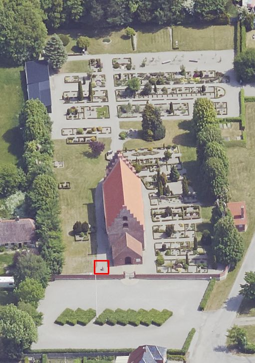
Tillitze mit dem wendisch/slawischen Ortsnamen und den nordischen Runeninschriften ist der Inbegriff der kulturellen Begegnung einer slawischen Bevölkerungsgruppe mit dem nordisch-dänischen Raum (Zitat von Anna-Elisabeth Jensen - Stellv. Leiterin des Museum Lolland-Falster - aus ihrem Buch "Freunde und Feinde. Dania Slavica. Südseeland, Lolland-Falster und Møn in der Wikingerzeit und im Hochmittelalter", 2023.
Der heutzutage im Friedhofsbereich neben der Kirche aufgestellte Runenstein ist der einzige in Dänemark, der zwei Inschriften beherbergt. Er ist auch der einzige Runenstein in Dänemark, der sicher von einer Person zu ihrem eigenen Gedenken mit einer Inschrift verziert wurde.
Der Runenstein wird in die Zeit von 1025 - 1075 datiert. Die Inschrift verläuft wie hier von mir visualisiert.
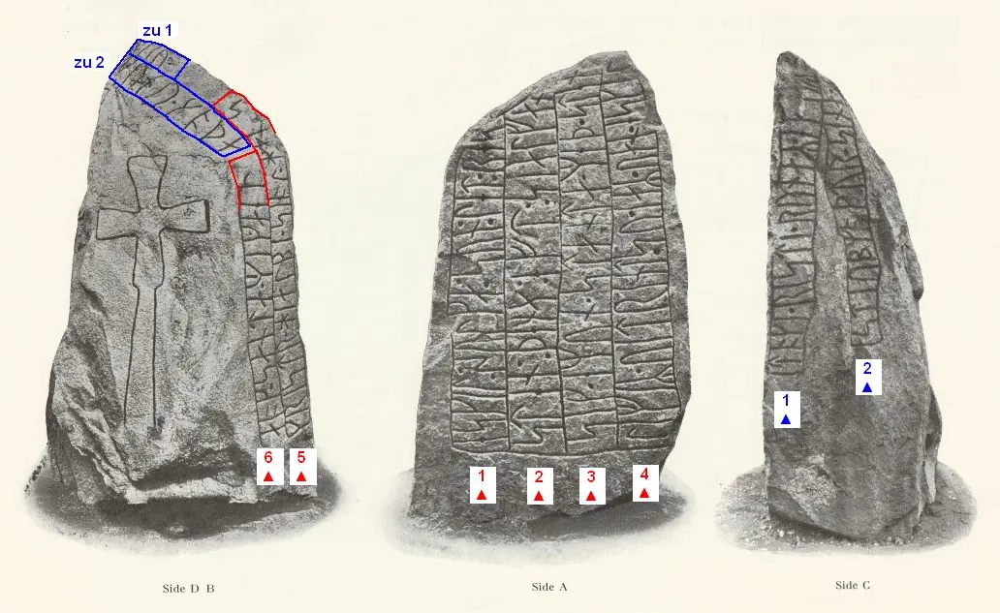
Die gerahmte erste Inschrift beginnt in der linken unteren Ecke der Breitseite A, verläuft nach rechts in vier parallel angeordneten Zeilen, die jeweils von unten nach oben gelesen werden. Sie setzt sich mit zwei Runenbändern auf der B-Seite von rechts nach links fort, die ebenfalls beide von unten nach oben verlaufen (Ende der Zeilen jeweils von mir mit roten Strichen gekennzeichnet).
Die zweite (sekundäre) Inschrift beginnt auf der schmalen C Seite im linken Runenband von unten nach oben und verläuft über die Steinspitze. Das zweite Textband verläuft ebenfalls von unten nach oben über die Oberseite.
Auf der Breitseite D findet sich ein großes christliches Kreuz von 38,5 cm Länge.
Die erste Erwähnung dieses Runensteins findet sich bereits 1627, als Jon Skonvig (*1600 - 1664, Pfarrer und der Runenzeichner für Ole Worm) ihn zeichnete. Zu der Zeit befand er sich in der südlichen Kirchhofmauer, mit der Kreuzseite zur Kirche hin. Dort war sein Standort wohl auch schon so lange man denken kann. Dessen Zeichnung hat sich in der "Den Arnamagnæanske Samling", A.M. 366 fol." (Zu deutsch: Arnamagnäanische Sammlung) erhalten. Am 28.07.2023 fiel mir zufällig auf, dass die Handschrift inzwischen digitalisiert wurde - welch Freude! Zuvor war dies aus Personalmangel nicht möglich gewesen, wie man mir bei meinem Besuch vor Ort im September 2022 mitgeteilt hatte.
Über diesen Link des Instituts für Nordische Studien und Linguistik (NorS) in Kopenhagen kann man die entsprechende Handschrift A.M. 366 fol. im Internet als Abbild eines einfachen sw Microfilms abrufen, der am 13.09.2004 angefertigt wurde, wie man mir von dort mitteilte. Das ist ja jetzt aber nach der Digitalisierung des Originals nur noch die 2. Wahl.
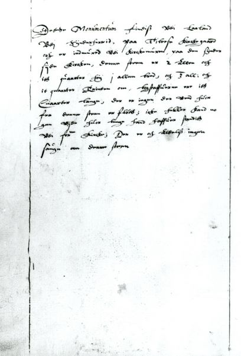
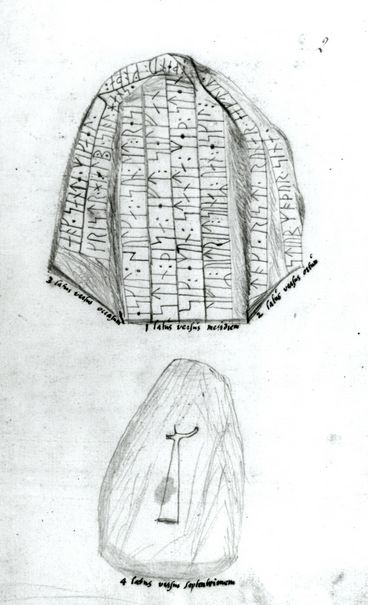
Der handschriftliche Text dazu lautet: "Dette Monumentum Findiss Vdi Laaland Vdi Sÿnderherrid, Paa Tileese Kirckegaard och er indmured Vdi Kirckemuren, paa den sÿnder sijde Kircken, denne steen er 2 Allen och itt quaarter hoÿ 1 allen bred, och 3 all: och it quaarter Trinten om, bogstaffuerne ere itt Quaarter lange, der er ingen der Veed huor fra denne steen er fløtt; icke heller kand nogen vijde huor lenge hand haffuer standitt Vdi forne Kircke; Der er och Aldeliss ingen saugn om denne steen."
Eine Abbildung dieser beiden Zeichnungen findet sich auch in der als Dissertation eingereichten Abhandlung von Erik Moltke (*04.04.1901 - 19.10.1984, Runologe, Historiker) - Jon Skonvig og de andre runetegnere. Et bidrag til runologiens historie i Danmark og Norge I-II, 1956-58 - Band 1 auf der Seite 2.
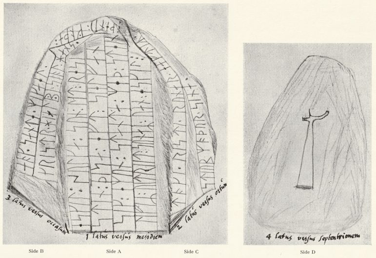
Originalgröße der Zeichnungen: 12,4 cm Höhe / 10,3 cm Höhe - Steingröße über Skonvigs Angaben gut 141 cm hoch und 63 cm breit (Moltkes Maße 143 x 81 cm).
Jon Skonvig ist sicherlich nie der beste Runenzeichner gewesen. Laut Erik Moltke (*04.04.1901 - 19.10.1984, Runologe, Historiker) - Jon Skonvig og de andre runetegnere. Et bidrag til runologiens historie i Danmark og Norge I-II, 1956-58, Band II - siehe Ausführungen auf der S. 22 - hat er in seiner Wiedergabe dieser Runenzeichen zahlreiche und schwere Fehler gemacht und das große Kreuzzeichen auf dem Runenstein ist echt schlecht erkannt / gezeichnet.
Ole Worm (*13.05.1588 - 31.08.1654, Arzt, Universalgelehrter und der Begründer der Runologie)
 Bildquelle:
Digitale Sammlung der Königlichen Bibliothek Kopenhagen -
Lizenz:
Public Domain
Bildquelle:
Digitale Sammlung der Königlichen Bibliothek Kopenhagen -
Lizenz:
Public Domain
hatte den dänischen König Christian IV. (*12.04.1577 - 28.02.1648)
 Bildquelle:
Wikipedia - Lizenz:
Public Domain
Bildquelle:
Wikipedia - Lizenz:
Public Domain
dazu bewogen am 11. August 1622 einen Brief an die Bischöfe von Dänemark und Norwegen zu senden, um darüber die Pfarrer im Land auzufordern alle Informationen zu Denkmälern, Runensteinen, Grabhügel usw. an ihn zu melden, um die älteste Geschichte Dänemarks zu beleuchten. Unterstützer oder gar treibende Kraft war wohl Christian Friis (*4. November 1581 auf Gut Krastrup in Farstrup - 01. Oktober 1639, dänischer Adliger und königlicher Kanzler).
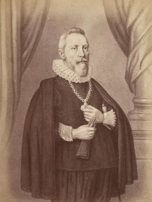
Bildquelle: Wikipedia - Lizenz: Public DomainDer Originaltext dieses Briefes lautet auszugsweise: "Wor gunst tillforn. Wy bede Eder och wille, at I Eders mueligste flid ahnwender allewegne wdj Eders stigt att opsøge och antegne alle slags antiquiteter och documenter effter medfølgende fortegnelsis indhold, och att I saadanne med flid lader optegne och engang inden Paaske førstkommendis wdj wortt cantzelie lader indleffuere. Dermed skie wor willghe. Befalendis Eder Gud. Skreffuitt paa wortt [slott] Kiøbenhaffn, den 10. augusti anno 1622. Vnder vort signett.Christian."
In den eingegangenen Rückmeldungen, den sogenannten "Præsteindberetninger" konnte ich zu dem Runenstein allerdings nichts entdecken. Dennoch wurde er von Ole Worm höchstpersönlich untersucht und unabhängig von Skonvigs Zeichnungen wurden über ihn zwei Metallstiche (aufgrund eigener Zeichnungen ?) angefertigt. Den Runenstein behandelt er in seinem großen Werk Danicorum Monumentorum Libri Sex, Hafniae, 1643 , S. 249-261 - dort als "Tilesense" betitelt - und zeigt auf den S. 252 und 253 die beiden u.a. Abbildungen. Ole Worm bittet in einem Brief vom 6.2.1636 seinen guten Freund, den Leibarzt des Kronprinzen Christian (* 10. April 1603; 2. Juni 1647), Heinrich Köster, um Zeichnungen und Informationen zu den Runensteinen von Tillitse, Bregninge, Skovlænge und Tirsted. Es gibt jedoch nichts was darauf hindeutet, dass Köster Ole Worms Wunsch nachkam.
Ab der S. 250 erklärt er seitenlang gegenüber Christoffer Urne (*27.10.1593 - 27.09.1663, dänischer Adliger, Beamter und Gouverneur von Norwegen 1629-42),
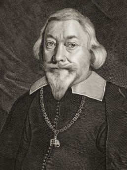
Bildquelle: Wikipedia - Lizenz: Public Domaindass er in der Zeichnung auf dem Stein, in Form eines Adlerfußes mit Schenkelstück, das Wappen von dessen Adelsgeschlecht sieht und es für deren Grabstätte hält. Er sah in dem "Toki" in der zweiten Inschrift den Stammvater des Geschlechts der Urnes.
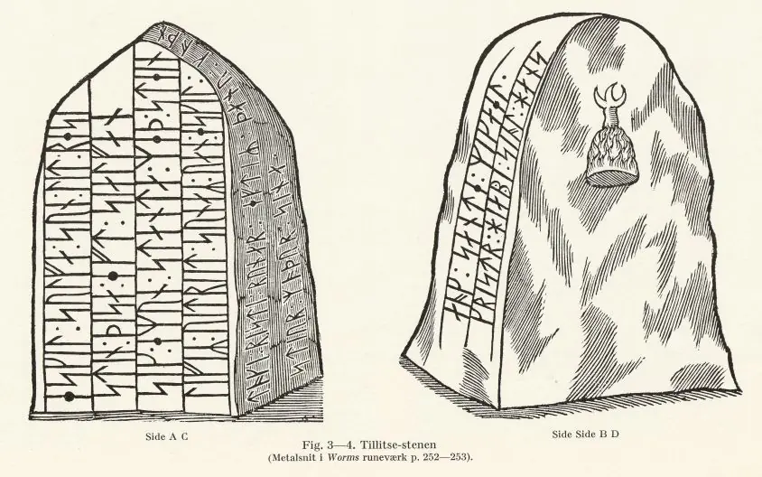
Diese Abbildung findet sich in der als Dissertation eingereichten Abhandlung von Erik Moltke (*04.04.1901 - 19.10.1984, Runologe, Historiker) - Jon Skonvig og de andre runetegnere. Et bidrag til runologiens historie i Danmark og Norge I-II, 1956-58 - Band 1, Seite 3.
Im Original sieht das dann so aus:
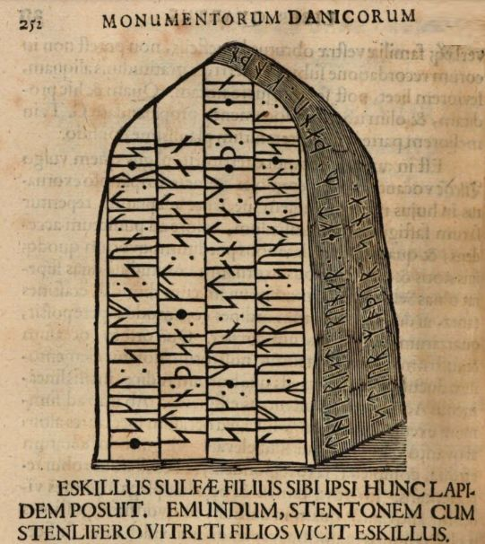
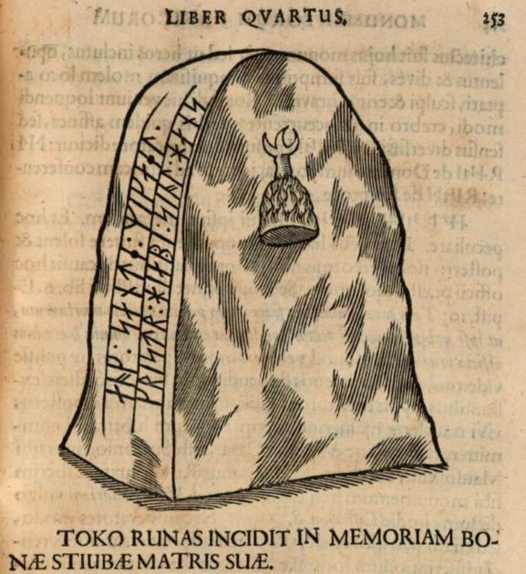
Andere deuteten Ole Worms Zeichnung als brennenden Ofen, als Fegefeuer u.a.
Ole Worm (*13.05.1588 - 31.08.1654, Arzt, Universalgelehrter und der Begründer der Runologie) schrieb in seinem Ergänzungsband zu seinem Hauptwerk (Danicorum Monumentorum libre sex - 1643 - auch als Monumenta Danica benannt), nämlich in den "Additamenta ad Monumenta Danica" von ca. 1650 auf den S. 12ff. über diesen Runenstein. Es handelt sich quasi um einen Brief vom 08.01.1650 an Otto Krag (*29.08.1611 - 04.02.1666, Sekretär des dänischen Königs Christian IV.)
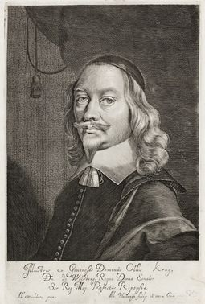
Bildquelle: Europeana - Lizenz: Public Domainmit seiner Verteidigung warum er diesen Runenstein so gedeutet hat.
Der Runenstein sollte dann aufgrund einer königlichen Verfügung vom Freitag 09.02.1652, erlassen durch König Frederik III. von Dänemark und Norwegen, nach Kopenhagen versandt werden (siehe: Nordisk Tidsskrift for Oldkyndighed, Band 1, 1832, S. 325). Die Verfügung wurden den regionalen Lehensmännern zugestellt. Dort heißt es als entsprechende Aufforderung: "Laaland. Friderich Barnewitz til Aalholm Lehn; Tilletſe⸗/ Bregninge⸗, Skovlænge⸗ og Tirsted - Stenene". Dieser Anweisung kam man hier, wie andernorts auch, jedoch nicht nach. Seitens Kopenhagen wurde nicht nachgehakt, da dort 1654 die Pest ausbrach, was auch Ole Worm noch im gleichen Jahr den Tod brachte.
Thomas Bartholin und latinisiert Thomas Bartholinus (*20.Oktober 1616 - 04. Dezember 1680, dänischer Arzt, Anatom und Theologe)
 Bildquelle:
Wikipedia - Lizenz:
Public Domain
Bildquelle:
Wikipedia - Lizenz:
Public Domain
schreibt im Jahre 1689 in seinem Werk "Antiquitatum Danicarum de Causis Contemptæ a Danis Adhuc Gentilibus Mortis Libri Tres ex vetustis codicibus & monumentis hactenus ineditis congesti" auf den Seiten 145-47 über diesen Runenstein mit einem abweichenden Deutungsversuch der Inschrift und bringt den von Ole Worm verwendeten Metallschnitt der Inschriftsseiten.
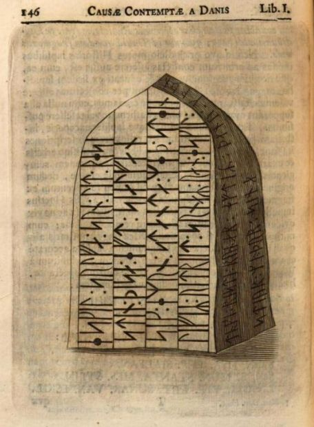
Søren Abildgaard (*18.02.1718 - 02.07.1791, Zeichner, Kupferstecher und Geologe)
 Bildquelle:
Jellingprojektet - Lizenz:
Public Domain
Bildquelle:
Jellingprojektet - Lizenz:
Public Domain
zeichnete den Stein dann 1765, als er als Grund- und Eckstein im Waffenhaus in der Erde saß, mit der Rückseite in der Mauer, so dass er nur die A und B Seite zeichnen konnte.
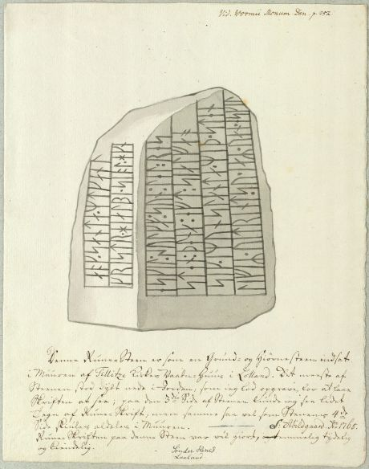
Quelle: Digitale Sammlung Nationalmuseum Kopenhagen - unverändert, nur verkleinert - Lizenz: CC-BY-SA
Handschriftlicher Text:
"Denne Rune-Steen er som en Grund- Og Hjørnesteen indsat i Muuren af Tillitze Kirkes Vaben-Huus i Lolland. Det meste af Steenen stod dybt nede i Jorden, som ieg lod opgrave, for at faae Skriften at see; paa den 3de Side af Stenen kunde ieg see lidet Tegn af Rune-Skrift, men samme saa vel som Steenens 4de Side skiules aldeles i Muuren. - S: Abildgaard. A(nn)o 1765. Rune-Skriften paa denne Steen var vel gjort, og temmelig tydelig og kiendelig."
Übersetzung: "Dieser Runenstein ist als Grund- und Eckstein in die Mauer der Waffenkammer der Tillitze-Kirche auf Lolland eingefügt. Der größte Teil des Steins lag tief im Boden, den ich ausgegraben hatte, um die Schrift zu sehen; Auf der 3. Seite des Steins konnte ich kleine Spuren einer Runenschrift erkennen, aber diese sowie die 4. Seite des Steins waren vollständig in der Wand verborgen. - S: Abildgaard. A(nn)o 1765. Die Runenschrift auf diesem Stein war gut gemacht und ziemlich klar und erkennbar."
Originalgröße der Skizze: 19 x 24 cm
Auch Erik Pontoppidan (der Jüngere, *03.09.1698 - 20.12.1764)
 Bildquelle:
Wikipedia - Lizenz:
Public Domain
Bildquelle:
Wikipedia - Lizenz:
Public Domain
macht in seinem Werk von 1767 "Den Danske Atlas" - X. Cap Om adelige Gaarde og Herre-sæder ec. - S. 333 (S. 21/22 in der pdf-Datei) Ausführungen zu diesem Runenstein und verweist auf Ole Worm: "I Tillese Kirkegaards Muur indsluttes en Steen 2 Alne lang og halvanden bred. Paa dens eene Side læses: Eskil sulsafun lit resi stin difa est fialsan sig emun slanta med stein lisir vitriit suner van eskil. Skal være: Eskil Sulfasön lod reise denne Steen efter sig selv, Eskil overvant Emund Stante med Stenlifer, som vare Virtiis Sønner. Paa Kanten af denne Side staaer dette Ønske: Kriste hialp siol hans aog samnte Mikael. Christie hielp hans Siæl og Sanct Michael. De andre tvende Sider paa samme Steen, vise følgende Ord. Toki risti runer eadtir denu gode stiub modur sina = Toke risede (maaske reiste) Runer efter den gode Stiube sin Moder. Stenens sdiste Side som er mere ujevn, viser en Ørne-Kloe samt lidet af Fuglens Laar, hvilket WORMIUS meener at være et Adeligt Vaaben af den her begravede Slegt. (334)."
Übersetzung: "In der Tillese Kirkenhof Einfriedungsmauer ist ein Stein eingeschlossen, der 2 Ellen lang und anderthalb breit ist. Auf der einen Seite kann man lesen: Eskil sulsafun lit resi stin difa est fialsan sig emun slanta med stein lisir vitriit suner van eskil. Was soviel heißt wie: Æskil, Sohn des Sulki, liess diesen Stein errichten zu seinem eigenen Gedächtnis. Immer wird, solange der Stein lebt, diese Gedenkinschrift dauern, die Æskil machte. Am Rand dieser Seite steht dieser Wunsch: Christus und Sankt Michael mögen seinr Seele helfen! Die anderen beiden Seiten auf demselben Stein zeigen die folgenden Worte: Toki risti runer eadtir denu gode stiub modur sina = Toki ritzte die Runen zum Andenken an Thora, seine Stiefmutter, eine wohlgebürtige Frau. Die letzte Seite des Steins, die ungleichmäßiger ist, zeigt eine Adlerklaue und ein Stückchen des Vogelschenkels, den WORMIUS für das Wappen des hier begrabenen Adelsgeschlechts hält. (S. 334)."
In seinem weiteren Band VI Del. 7 - Ergänzungsband zu "Den Danske Atlas", zu Band II und III, für die Stifte von Seeland, Lolland und Fünen - geht er auf der Seite 465 (S. 10 in der pdf-Datei) nochmals auf diesen Runenstein ein: "Paa det Vestre Hiørne af Vaaben-Huuset er i en Grund-Steen udhuggen en Inscription med Rune-Bogstaver, og ligeledes én i Kirke-Muren, som er anført i Wormii Monument. P. 252. og Atlas Dan. T. III. p. 333."
Übersetzung: "An der westlichen Ecke des Waffenhauses befindet sich eine
Inschrift mit Runenbuchstaben, die in einen Grundstein gemeißelt ist, eingesetzt
in der Kirchenmauer, die im Wormii-Denkmal aufgeführt ist. S. 252. und Atlas
Dan. T. III. S. 333."
Im Jahre 1832 erschien von Johan Gustav Liljegren (*27.02.1791 -02.06.1837, schwedischer Nationalarchivar und Archäologe)
 Bildquelle:
Schwedisches Reichsarchiv - Lizenz:
Public Domain
Bildquelle:
Schwedisches Reichsarchiv - Lizenz:
Public Domain
sein Buch mit dem Titel "Run-Lära". Darin kommt er auf den Seiten 135 und 187 auf diesen Runenstein zu sprechen. Seiner Aufassung nach ist der "Adlerfuß" von Ole Worm eher als das "Fegefeuer" zu deuten.
(*14.03.1821 - 15.08.1885, dänischer Archäologe und Vorgeschichtler)
 Bildquelle: Fotografie um 1863
von Fotograf Budtz Müller
(*26.12.1837 -
30.12.1884) -
Det Kgl. Biblioteks billedsamling - Lizenz:
Public Domain
Bildquelle: Fotografie um 1863
von Fotograf Budtz Müller
(*26.12.1837 -
30.12.1884) -
Det Kgl. Biblioteks billedsamling - Lizenz:
Public Domain
hat in seinem Notesbog I aus dem Jahr 1848 auf der S. 55 eine Beschreibung des Fundplatzes und der Inschrift eingetragen. Damals war der Runenstein noch eingemauert und die Inschriften nur teilweise sichtbar.


#/media/Datei:Fotoreproductie_van_een_schilderij,_voorstellende_een_portret_van_Christian_Friis_til_Kragerup_Christian_Friis_(til_Kragerup)_(titel_op_object),_RP-F-2001-7-742-16.jpg){kind=link}


Dessen Tagebücher werden heute in Kopenhagen in dem "Antikvarisk-Topografisk Arkiv" aufbewahrt, worüber ich bei meinem Besuch am 27.09.2022 Einsicht nehmen und diese Fotos anfertigen durfte.
Vermutlich 1863 wurde der Runenstein auf Geheiß von P. G. Thorsen (*07.08.1811 - 06.05.1883, Bibliothekar, Runenforscher und Historiker)

von seinem bisherigen Platz wieder herausgenommen. Er wurde nun unmittelbar vor der Kirchhofmauer aufgestellt.
Im Nationalarchiv in Kopenhagen hat sich wohl diese Zeichnung aus dem Jahre 1864 von Jacob Kornerup (*19.11.1825 - 09.03.1913, dänischer Archäologe und Zeichner aus Roskilde)
 Bildquelle:
Wikipedia - Lizenz:
Public Domain
Bildquelle:
Wikipedia - Lizenz:
Public Domain
bewahrt, wie Erik Moltke (*04.04.1901 - 19.10.1984, Runologe, Historiker)
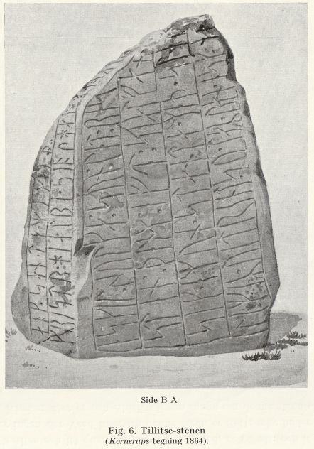
in seiner Dissertation "Jon Skonvig og de andre runetegnere. Et bidrag til runologiens historie i Danmark og Norge I-II, 1956-58 - Band 1, Seite 4." darlegt.
George Stephens (*13.12.1813 - 09.08.1895, englischer Archäologe und Philologe)
 Bildquelle:
Minder fra min Virksomhed paa Arkæologiens
Omraade fra 1845 til 1908 von
Magnus Petersen (*04.09.1827 - 01.02.1917) auf der
Seite 265 - Lizenz:
Public Domain
Bildquelle:
Minder fra min Virksomhed paa Arkæologiens
Omraade fra 1845 til 1908 von
Magnus Petersen (*04.09.1827 - 01.02.1917) auf der
Seite 265 - Lizenz:
Public Domain
setzt sich in The old-northern runic Monuments of Scandinavia and England, Vol. 1, 1866-67 auf der Seite 21 mit der Inschrift dieses Runensteins und den bisherigen Ausführungen von P. G. Thorsen auseinander.
In seinem Band 2 aus dem Jahr 1867/68 führt er auf der S. 795 nur kurz die christliche Formel "KRISTR HIALBI SIOL Ha(ns), AOK SANTA MIKAEL ! CHRIST HELP SOUL HIS, EKE (and) SAINT MICHAEL!" an.
Weiterhin macht er in seinem Band 3 aus dem Jahr 1884 - unter Bezug auf die S. 21 aus seinem Band 1 - auf der Seite 5 Ausführungen zu dem Wort "uitrent" (Gedenkinschrift) auf der A Seite des Runensteins. Auf der S. 342 kommt er dann nochmals auf die beiden Inschriften zurück.
Zeichnungen von Magnus Petersen (*04.09.1827 - 01.02.1917, Archäologischer Zeichner und Restaurator)
 Bildquelle:
Fotografie von 1903
von Fotograf Marius Christensen (*24.6.1874 -
25.6.1907) -
Det Kgl. Biblioteks billedsamling - Lizenz:
Public Domain
Bildquelle:
Fotografie von 1903
von Fotograf Marius Christensen (*24.6.1874 -
25.6.1907) -
Det Kgl. Biblioteks billedsamling - Lizenz:
Public Domain
finden sich in den beiden großen dänischen Runenwerken von P. G. Thorsen (*07.08.1811 - 06.05.1883, Bibliothekar, Runenforscher und Historiker) - De danske runemindesmærker beskrevne og forklarede, anden Afdeling, Jyllands Runemindesmærker, I. Afbildninger, 1879 - Beilage zu Nr. 33 ff. - hier Scan aus dem in meinem Besitz befindlichen Exemplar.
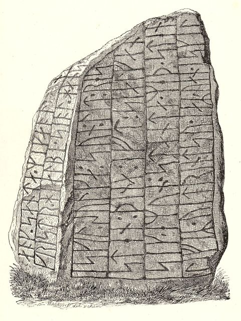
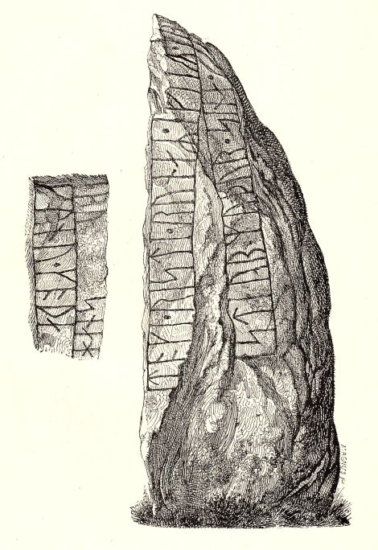
Es gibt von dem großen Kreuz auf der Seite D merkwürdigerweise bei ihm keine Zeichnung.
P. G. Thorsens Nachlass (Bezeichnet als: P. G. Thorsens optegnelser, tegninger m.m. vedrørende runer og runemindesmærker - überführt aus der Kopenhagener Universitätsbibliothek 1929 - Gemäß Ministerialschreiben vom 04.03.1929; früher benannt als Additamenta 612 kvart) - findet sich heutzutage in der Königlichen Bibliothek in Kopenhagen unter NKS 3296 kvart (in mehreren einzelnen Pappschachteln). In der Pappschachtel Nr. 18 fand ich dort bei meinen Studien am 27.09.2022 zu diesem Runenstein erfreulicherweise etliche Aufzeichnungen. Darunter zwei Zeichnungen aus dem Jahr 1864 von Jacob Kornerup. Die erste Zeichnung scheint eine Vervielfältigung der o.a. Zeichnung bei Erik Moltke zu sein. Das Original der obigen kann es aber nicht sein, denn sie weicht an einigen wenigen Punkten von ihr ab (Grasbüschel links).
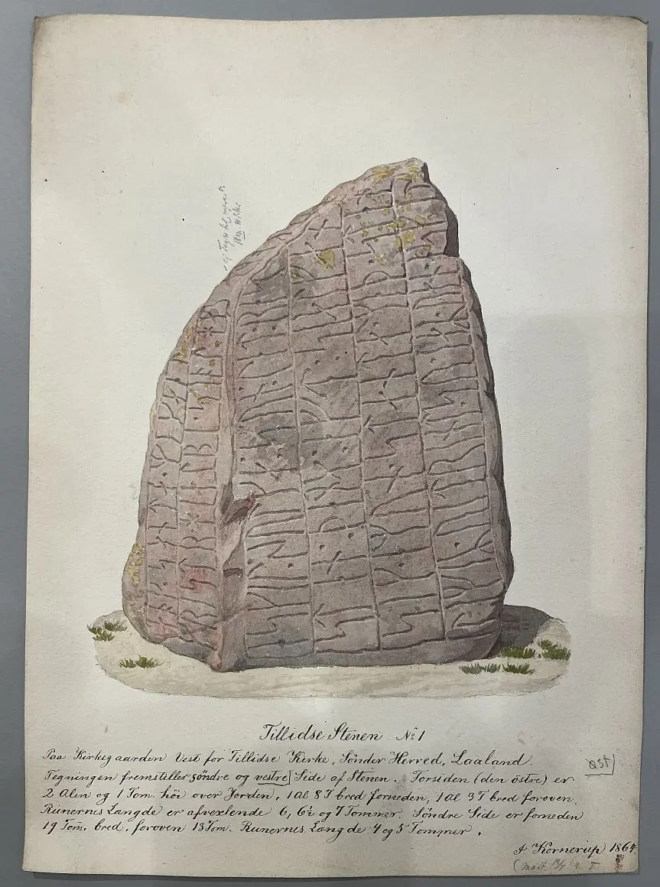
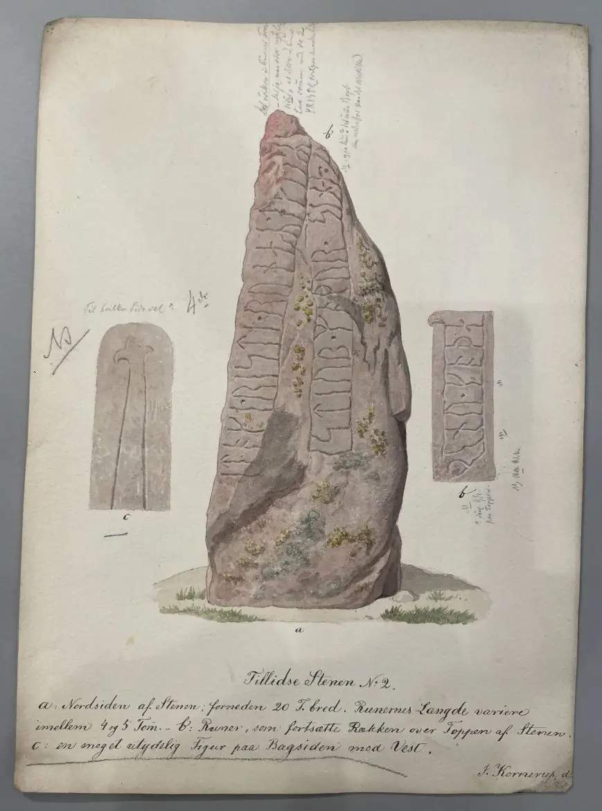
Als nächstes fand ich eine handschriftliche Aufzeichnung - ein Arbeitsblatt von Thorsen selbst, das er rechts oben mit dem Datum 24. Juli 1838 versehen hat.
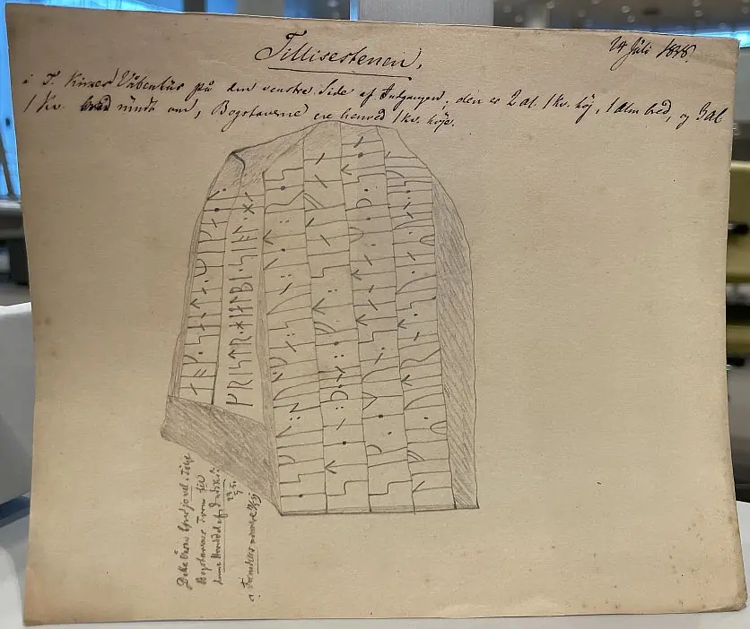
und dann auch noch diese drei tollen Zeichnungen von Magnus Petersen, die er jeweils auf den 16. September 1871 datiert hat.
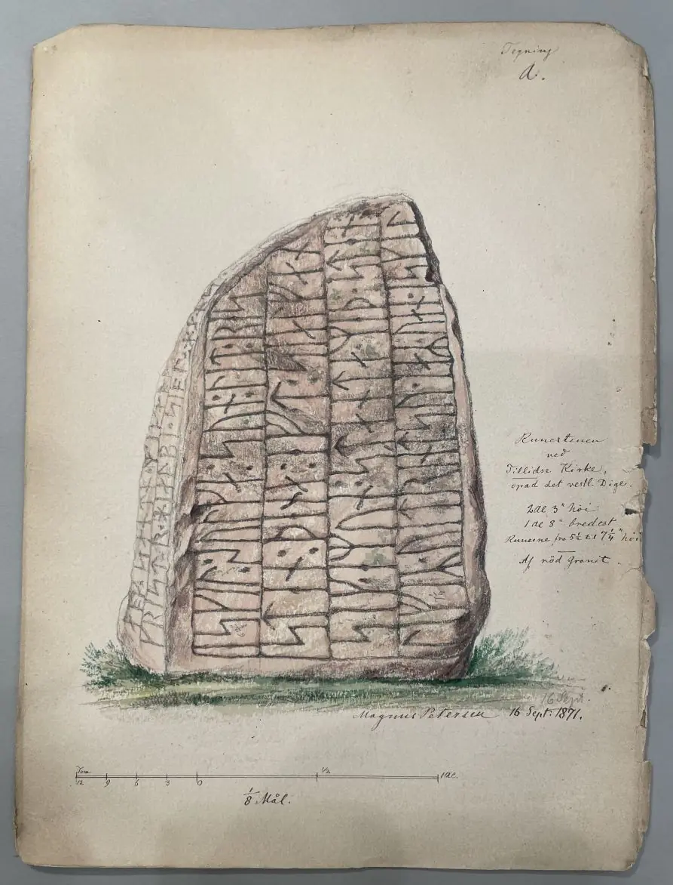
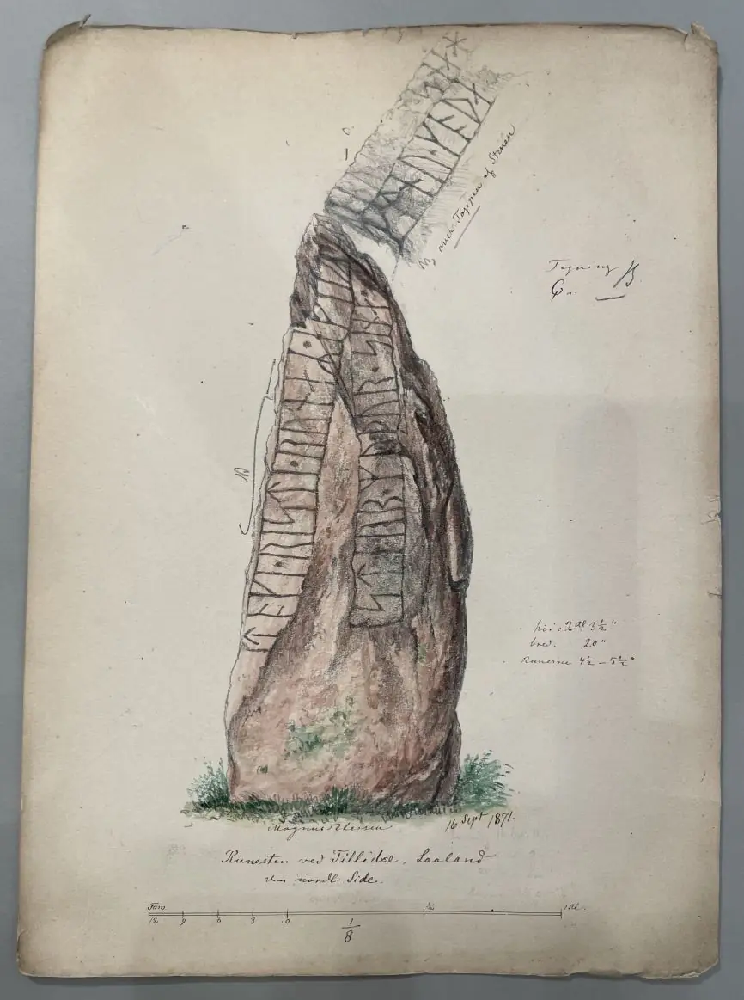
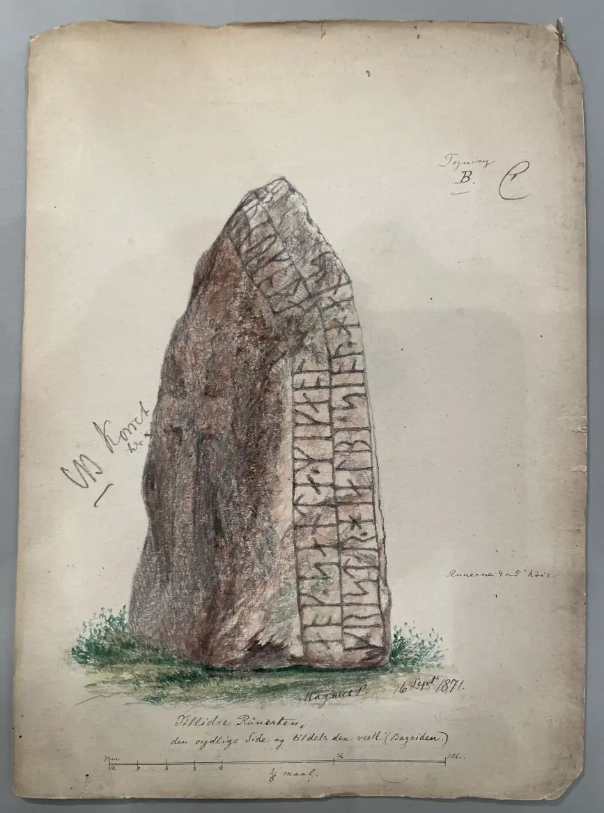
Magnus Petersen erwähnt in seinen Lebenserinnerungen, die den Titel ""Minder fra min Virksomhed paa Arkæologiens Omraade fra 1845 til 1908" tragen, auf der S. 51 kurz, dass er diesen Runenstein gezeichnet hat - "...derefter drog jeg til Laaland for at tegne Taagerup, Skovlænge, Tillitse og Sæddinge Runestenene...". Übersetzung: "...Dann ging ich nach Lolland, um die Runensteine Taagerup, Skovlänge, Tillitse und Sæddinge zu zeichnen...".
Der bedeutende Runologe Ludv. F. A. Wimmer (*07.02.1839 - 29.04.1920, Philologe und Runenforscher)
 Bildquelle:
Fotografie zw. 1877-1900 von Fotograf Hansen & Weller
-
Det Kgl. Biblioteks billedsamling - Lizenz:
Public Domain
Bildquelle:
Fotografie zw. 1877-1900 von Fotograf Hansen & Weller
-
Det Kgl. Biblioteks billedsamling - Lizenz:
Public Domain
hat in seinem Werk "De danske runemindesmærker undersøgte og tolkede af Ludv. F. A. Wimmer:, Andet bind, Runestenene i Jylland og på øerne. 1899-1901" - Nr. 24, S. 489ff. ebenfalls Ausführungen zu diesem einzigartigen Runenstein mit seinen zwei Inschriften gemacht. Zunächst geht er auf der S. 485 auf das Wort "uitrent" ein und kommt dann auf den S. 489-97 auf den Runenstein zu sprechen.
Er führt in dem Absatz zu diesem Runenstein aus: "Dieses interessante Denkmal gehört zu den wenigen Runensteinen, die Ole Worm persönlich untersuchen konnte, und er hat es in Danicorum Monumentorum libre sex - 1643 (S. 249-61) wiedergegeben. Dieser machte den Tillitse-Stein zum Thema einer längeren Nachricht, die an Christoffer Urne in Åsmark gerichtet war. Den Adlerfuß, den Ole Worm auf der Rückseite des Steins zu finden glaubte, hielt er für das Familienwappen der Urnenfamilie. Die von verschiedenen Seiten dagegen geäußerten Bedenken wurden später von Worm in einem Brief an Otto Krag in Trudsholm verteidigt, der in den Additamenta ad Monumenta Danica enthalten ist. Der schwedische Rivale Ole Worms, J. Th. Bure (1568-1652) in "Monumenta Danica certiori Lectioni restituta ab absente" von 1643 und Thomas Bartholin (in seinem berühmten, mit Arne Magnussons Hilfe ausgearbeiteten, Antiquitatum Danicarum de Causis Contemptæ a Danis Adhuc Gentilibus Mortis Libri Tres ex vetustis codicibus & monumentis hactenus ineditis congesti", Hafniæ 1689, meldeten Deutungsversuche an. Während J. Th. Bure nur versuchte, die mit toki beginnende Inschrift zu interpretieren, in der er das Wort stiubmopur richtigerweise als 'Stiefmutter' erklärt (Worm hatte stiub als Eigennamen verstanden, als Namen von Tokes Mutter), machte Thomas Bartholin einen Vorschlag, um den letzten Satz der Hauptinschrift zu verstehen, die sich stark von Ole Worms unterscheidet und einen deutlichen Fortschritt bedeutet..."
Über seine Studien kommt er zu dem Ergebnis, dass die Inschriften in drei zeitlichen, womöglich nicht allzu lange auseinander, Etappen entstand. Vielleicht sogar durch den gleichen Runenritzer.
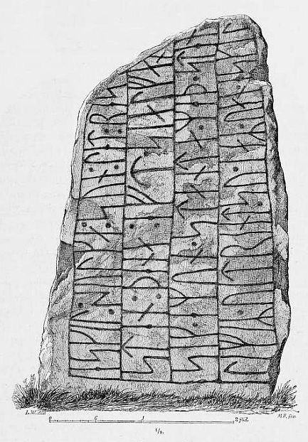
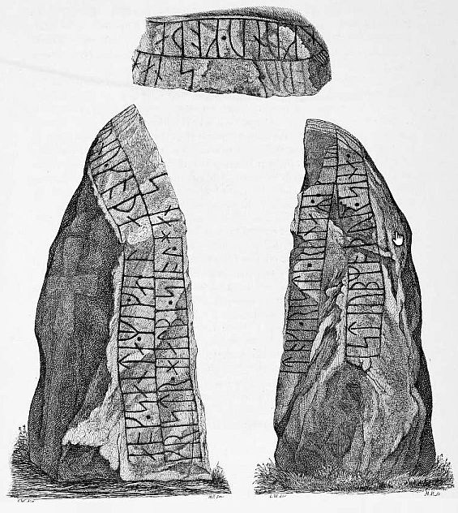
Diese beiden Zeichnungen stammen von Magnus Petersen (*04.09.1827 - 01.02.1917, Archäologischer Zeichner und Restaurator). Ludv. F. A. Wimmer, der den Runenstein persönlich am 28.07.1879 vor Ort untersucht hat, hat diese darüber nochmals überarbeitet. Sie finden sich in dem o.a. Werk auf den S. 490-91 wieder. Er schrieb dazu: "Während meines Studiums im Jahre 1879, das bei äußerst günstigen Wetter- und Lichtverhältnissen durchgeführt wurde, so dass es mir gelang, hervorragende Eindrücke von der gesamten Inschrift zu gewinnen und alle Zweifel, die an ihre Lesung geknüpft sein könnten, auszuräumen, fand ich den Stein vor Ort und sehr leicht zugänglich für das Studium."
Ludv. F. A. Wimmer hat seine jahrelangen Aufzeichnungen der "Kgl. Bibliotek" in
Kopenhagen überlassen. Ein Verzeichnis darüber wurde 1915 in Buchform herausgegeben - "Collectio runologica Wimmeriana: Fortegnelse over Ludv. F. A. Wimmers runologiske o.a. Samlinger i Det kgl. Bibliotek".In seinen Unterlagen in der Königlichen Bibliothek in Kopenhagen befinden sich unter "III - Originaltegninger af de danske Runemindesmærker, udførte paa Undersøgelsesrejserne af Magn. Petersen og kontrollerede paa Stedet af Ludv. Wimmer, samt Prøvetryk af de paa Grundlag af de nævnte Tegninger, Aftryk o. s. v. til De danske Runemindesmærker" udførte Afbildninger med Wimmers Rettelser" zu dem Runenstein von Tillitse unter der Nr. 103 drei Zeichnungen von 1879, die ich am 27.09.2022 fotografieren durfte.


Magnus Petersen (*04.09.1827 - 01.02.1917, Archäologischer Zeichner und Restaurator) hat diese Zeichnungen angefertigt und mit dem Datum vom 28.07.1879 versehen.
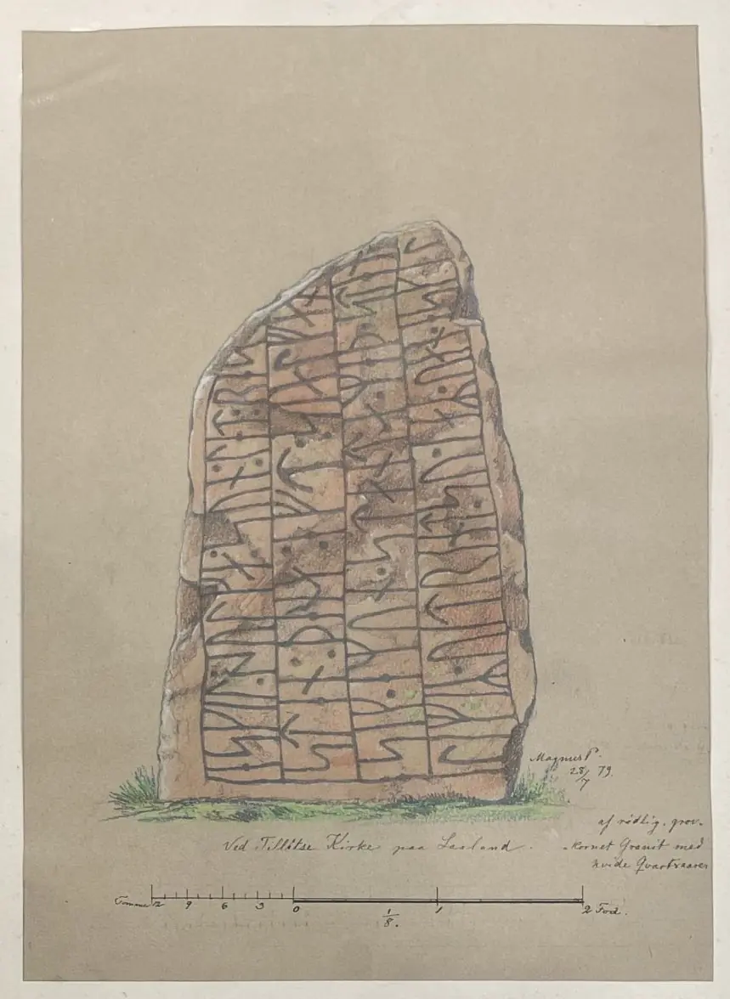
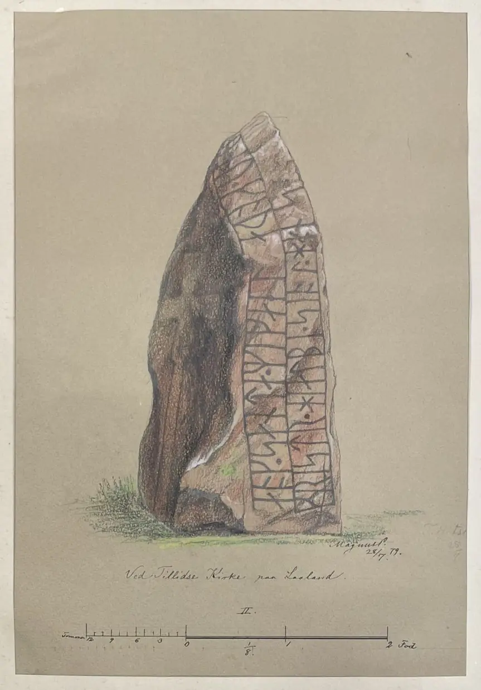
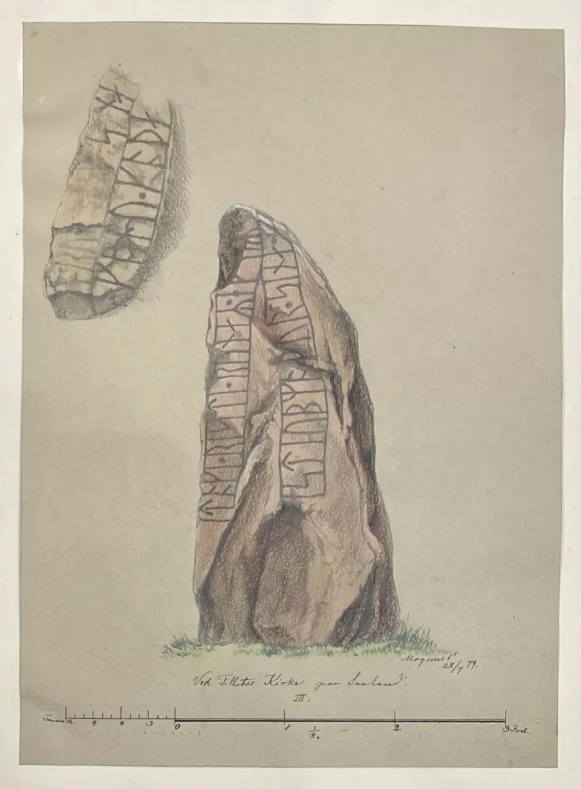
Diese drei sw-Fotos stammen von Erik Moltke (*04.04.1901 - 19.10.1984, Runologe, Historiker), die er am 10.04.1931 anfertigte und auf denen die Runenzeichen und das Kreuz - weil nachgezeichnet - sehr gut zu erkennen sind.
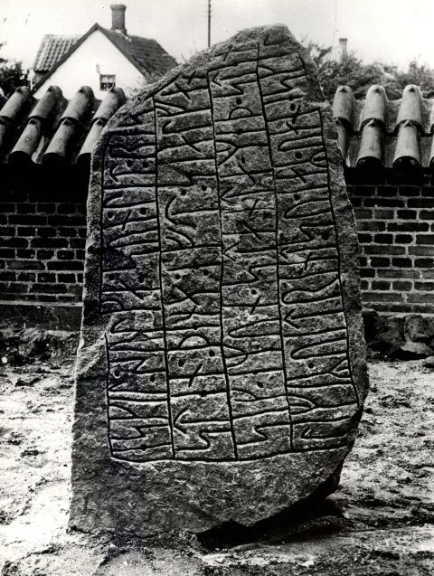
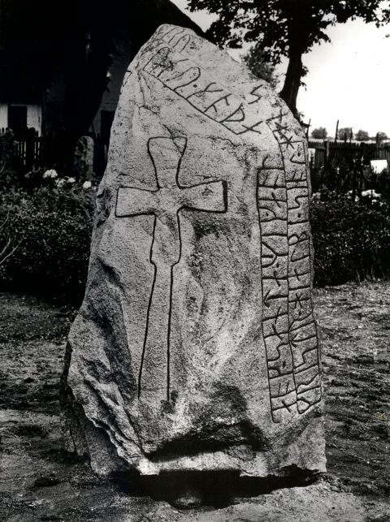
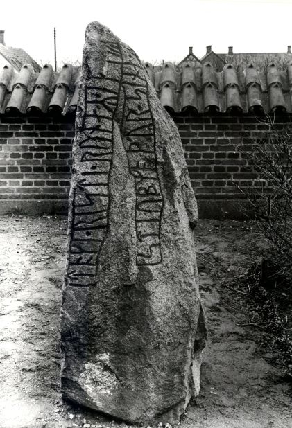
Quelle: Digitale Sammlung Nationalmuseum Kopenhagen - Jeweils Lizenz: CC-BY-SA
Diese Abbildung mit den drei Fotografien findet sich in der als Dissertation eingereichten Abhandlung von Erik Moltke (*04.04.1901 - 19.10.1984, Runologe, Historiker) - Jon Skonvig og de andre runetegnere. Et bidrag til runologiens historie i Danmark og Norge I-II, 1956-58 - Band 1, Seite 7.
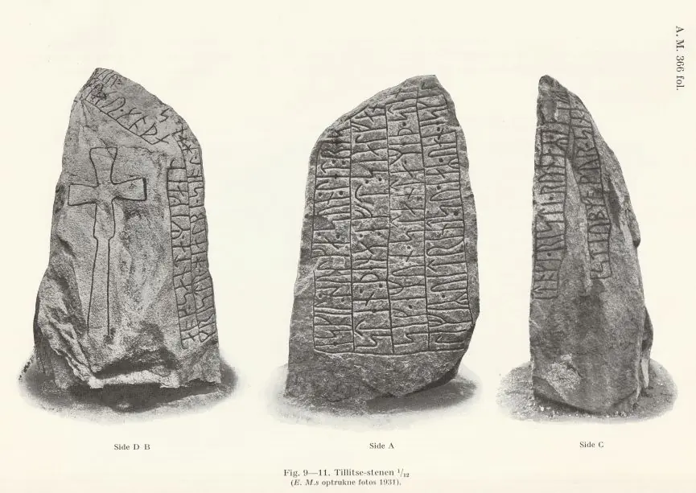
Bei dieser neuerlichen Untersuchung 1931 wurde er auf Geheiß von Erik Moltke auf seinen noch heute gültigen Standort, freistehend neben der nordwestlichen Ecke des Waffenhauses, umgesetzt.
In dieser Dissertation von Erik Moltke finden sich auf der S. 5 nochmals andere Zeichnungen von Magnus Petersen die er 1877 angefertigt hat.
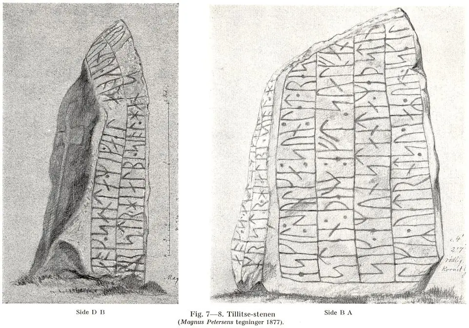
Im Vorfeld zu dem 2016 erschienenen Buch von Lisbeth M. Imer (*1973, Runologin am Nationalmuseum Kopenhagen) "Danmarks Runesten - en fortælling" reiste sie mit dem Fotografen Roberto Fortuna zur Bestandsaufnahme durch die Lande. Dieser hat die Runensteine mit Schräglicht aufgenommen und darüber wirklich herausragende Fotos erzielt. Diese drei Fotografien stammen vom 15.03.2012.
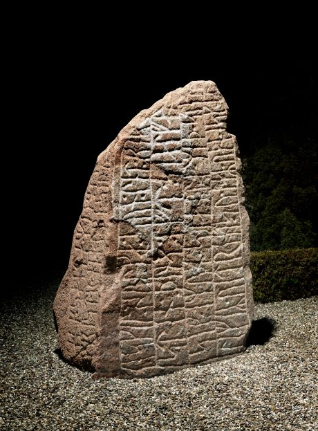
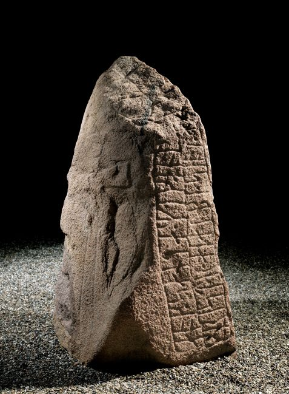
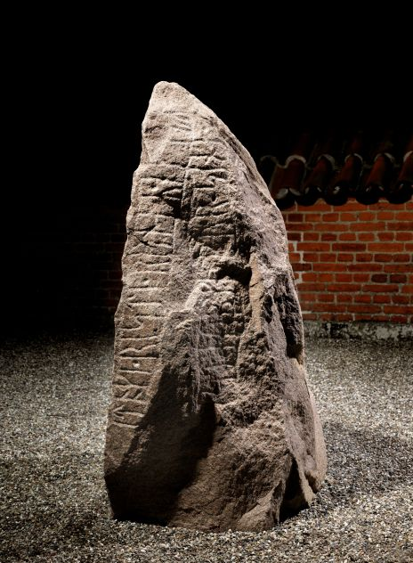
Quelle: Digitale Sammlung Nationalmuseum Kopenhagen - Lizenz jeweils: CC-BY-SA 3.0
Bei meinem letzten Besuch vor Ort am 31.August 2016 habe ich diese Fotos angefertigt:
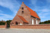 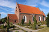 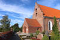 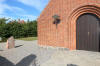 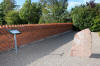


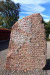 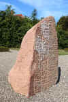 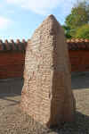 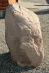 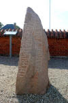


Viele Informationen zu diesem Runenstein findet man im Internet auf der Webseite der dänischen Runendatenbank.
Der entsprechende Eintrag zu dem Runenstein in "Fund og Fortidsminder" ist hier verlinkt.
Über diesen Link finden sich zu dem Runenstein Informationen des Forschungsprojektes "Runes" der Akademie der Wissenschaften zu Göttingen.
Auf der Webseite von "Danmarks kirker" findet man zu der Kirche von Tillitse eine 13-seitige Abhandlung von 1948 zur Kirche und deren Ausstattung.
Literaturhinweise:
Carl Christian Haugner - Lollands Oldtidsminder - 1941 - S. 132 ff.
Karen Løkkegaard Poulsen - Runesten på Lolland-Falster - in: Lolland-Falsters Historiske Samfunds Årbog - 1989 - S. 65-86
Anna-Elisabeth Jensen - "Freunde und Feinde. Dania Slavica. Südseeland, Lolland-Falster und Møn in der Wikingerzeit und im Hochmittelalter" - 2023